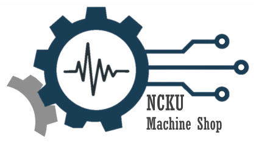

國立成功大學－機械科技研發中心－精密儀器工程室
為您量身打造精密儀器與設備
我們專注於高精密儀器研發與自動化系統整合，結合先進的精密加工製造能力，提供從概念設計、客製製造到系統測試的全方位服務，滿足您在先進製造與實驗自動化的獨特需求。
核心技術涵蓋精密機械設計、PID 溫度控制與高精度運動控制，結合精密加工製造能力，專精於自動化系統開發及先進儀器的系統整合。
精密零件製造、實驗儀器開發與材料熱衝擊檢測。